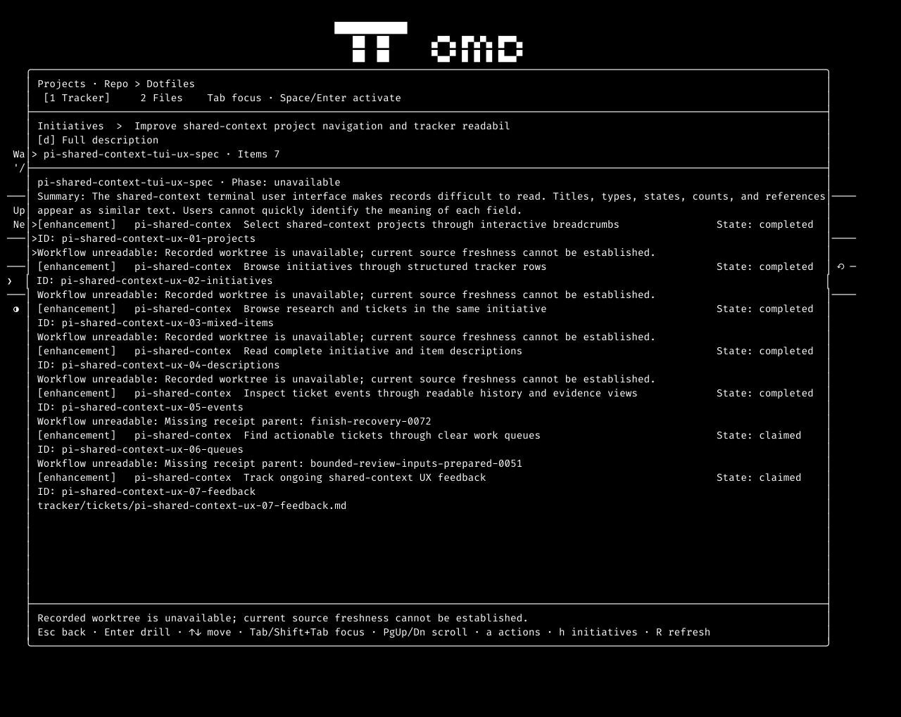
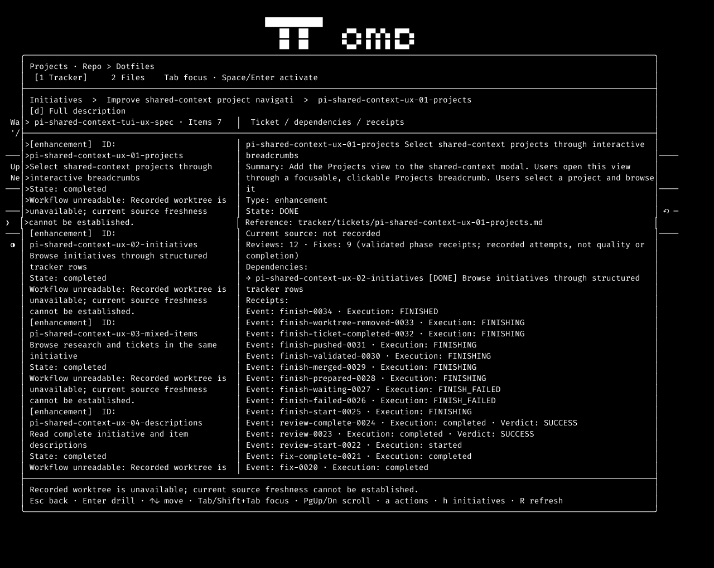
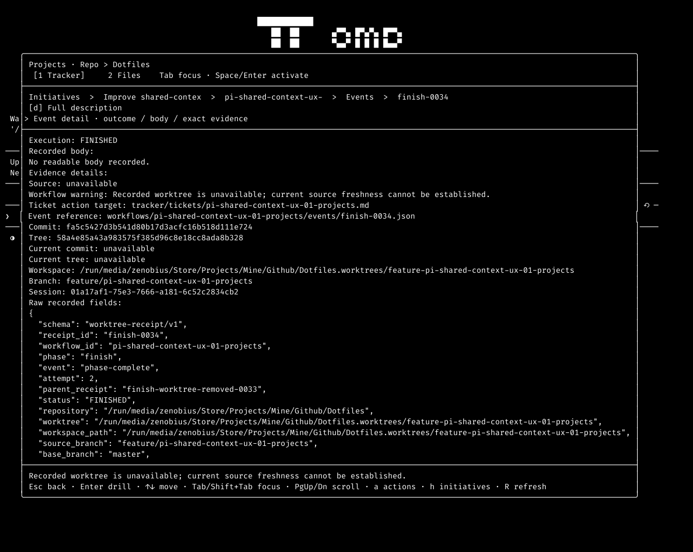
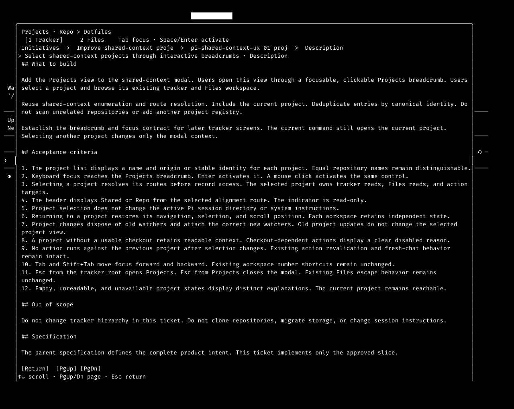
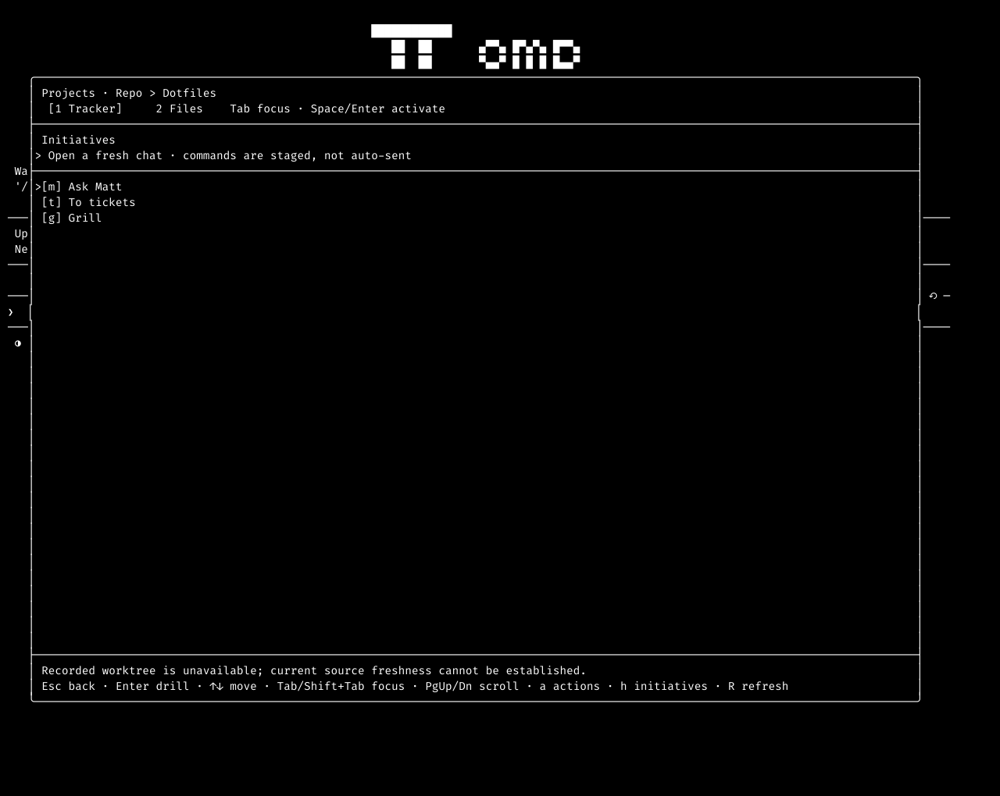

Shared-context UX feedback evidence
Read-only capture for pi-shared-context-ux-07-feedback. No UI fix or acceptance pass is claimed.
Result summary
Receipt diagnostics Reproduced with limits
The loaded initiative list showed workflow warnings in six ticket rows. In split view, a warning wrapped across three lines. The first snapshot after opening the initiative already contained loaded diagnostics. This run does not prove the loading-to-loaded expansion.

Selection and item spacing Reproduced
The selected ticket displayed an arrow on all eight rendered lines. Adjacent items had no blank separator row. The initiative list also repeated its arrow across both selected lines. Background retention cannot be checked with these monochrome snapshots.

Receipt detail fields Reproduced
Enter opened the event list. A second Enter opened finish-0034. Execution, body, evidence, source, reference, commit, tree, workspace, branch, and session fields appeared on consecutive lines.

Markdown body Partial evidence
The d key opened the complete ticket description. The body was reachable and contained Markdown text. These captures cannot establish its actual background colour or compare that background with metadata.

Initiative path-copy discovery Partial evidence
The initiative footer showed queue, open, action, refresh, and back keys. The action menu showed Ask Matt, To tickets, and Grill. Neither surface exposed a copy key. Pressing c returned the same visible initiative list. Clipboard contents were not read, so this does not prove that copying failed.

Capture method and source
The capture used termscope 0.1.1 and omp 18.10.3. A fresh ephemeral omp process ran inside the termscope PTY without a physical terminal. It did not run a model prompt or implementation agent. The command was:
termscope session -- omp --no-session --no-tools --no-titleThe terminal started at 80 × 24, then resized to 140 × 50 before opening /shared-context. The working directory was /run/media/zenobius/Store/Projects/Mine/Github/Dotfiles. HEAD was 8568ad62159d6c6a46f8ce403fb90e865a77163f; tree was 39e14b848cda15ac7639aed26b8e86070214af35.
Existing uncommitted changes affected actions.ts, actions.test.ts, and index.ts in the shared-context extension. This report describes the running working copy, not a clean build of HEAD. Source hashes and launch details are in the capture manifest.
Original termscope SVG snapshots omit terminal colours and backgrounds. PNG previews derive from those snapshots, with explicit whitespace preservation and a monospace font for raster conversion. They are terminal reconstructions, not desktop screenshots. Text and JSON remain the primary evidence for line content and spacing.
- Recorded termscope requests and responses
- Capture manifest and source hashes
- Ticket detail terminal JSON
- Original ticket detail SVG
- Initiative screen after c

Not covered
- The compact loading state was not captured. Its transition to the loaded state remains unproved by this run.
- UI backgrounds, colours, and contrast were not preserved. Selection background and Markdown background requirements need a colour-preserving capture.
- Clipboard bytes and parity with ticket path-copy were not tested. Only initiative shortcut discoverability was inspected.
- The six original attachments were not compared pixel by pixel or changed. This run created new evidence only.
- The startup screen reported a failed unrelated hooks/pre extension load. The shared-context modal still opened. Old worktree warnings and missing receipt parents were recorded, not repaired.
- No implementation, reviewer, or fixer session ran. No workflow phase or receipt was created. The target had no prior workflow directory or parent receipt. The ongoing feedback ticket remains claimed.
State left behind
Only this evidence directory was added. The ephemeral capture process closed with exit code 129 through the termscope close method. No running capture session remains. No ticket, source, receipt, or configuration file was changed by this capture. Evidence remains local and uncommitted.